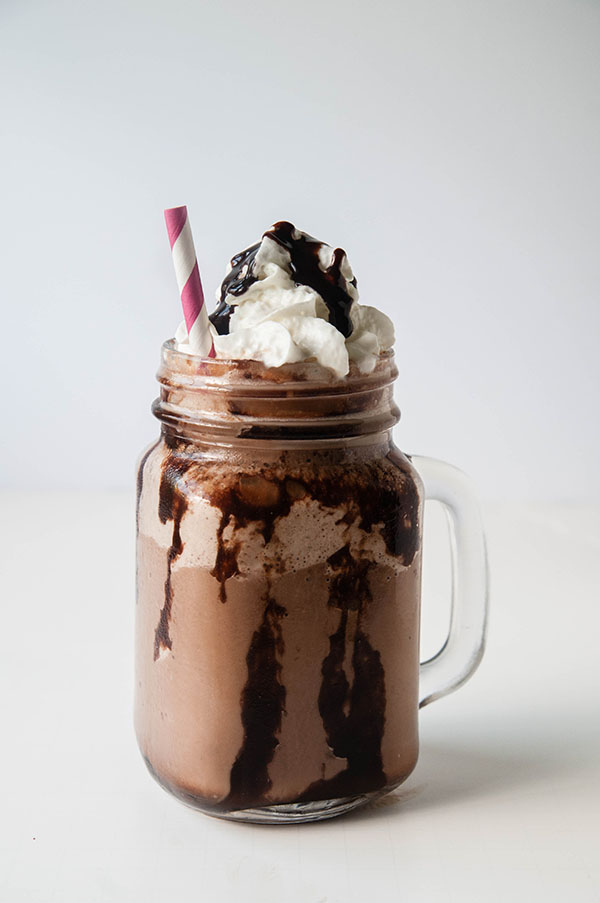

Mocha Frappuccino

Description
Indulge in the rich and velvety delight of a homemade chocolate frappuccino. This recipe combines the bold flavors of coffee with the lusciousness of chocolate, resulting in a decadent and refreshing beverage that will tantalize your taste buds.
Ingredients:
- 1 cup milk (dairy or non-dairy)
- 1/2 cup strong brewed coffee (chilled)
- 2 tablespoons chocolate syrup or cocoa powder
- 2 tablespoons granulated sugar (adjust to taste)
- 1 cup ice cubes
- Whipped cream (optional)
- Chocolate shavings (optional)
Instructions:
- Brew a strong cup of coffee and let it cool. You can use instant coffee or a coffee maker, depending on your preference.
- In a blender, combine the chilled coffee, milk, chocolate syrup or cocoa powder, sugar, and ice cubes.
- Blend the mixture on high speed until all the ingredients are well combined and the frappuccino is smooth and creamy.
- Taste the frappuccino and adjust the sweetness by adding more sugar if desired. Blend again briefly to incorporate the added sugar.
- Pour the chocolate frappuccino into a glass.
- If desired, top the frappuccino with whipped cream and sprinkle some chocolate shavings on top for extra flavor and presentation.
- Serve immediately and enjoy your homemade chocolate frappuccino!
Back to Top
Back to Main Page